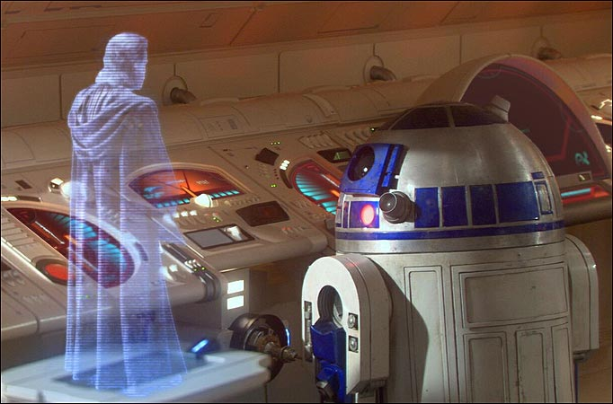

Accueil Holo 2.11

Calibrage
Calibrage du prisme
Générés directement depuis Three.js
Terre
Saturne
Cube
Fichiers OBJ + Texture
Clef d'Ex 1
Clef d'Ex 2
AM Trad'sss
Camping car
Implémentation du Leap Motion
Terre
Hologramme type "Star Wars"
F Ruhla en hologramme